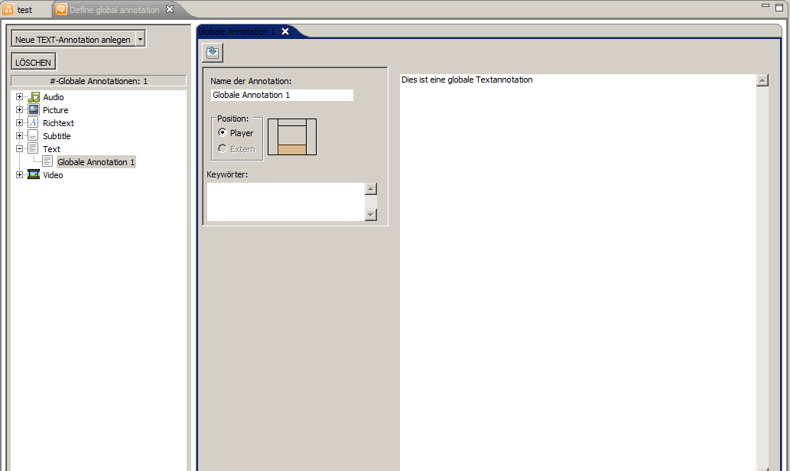

Der Editor für globale Annotationen ist unter Projekt -> globale Annotationen zu finden. Hiermit lassen sich Annotationen erstellen, die über die Dauer des gesamten Projekts angezeigt werden. Es lassen sich die gleichen Arten von Annotationen wie bei herkömmlichen Annotationen erzeugen und es kann für jede Annotation die Position ausgewählt werden.
